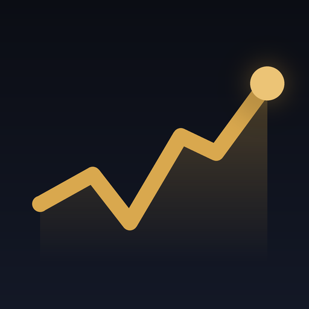
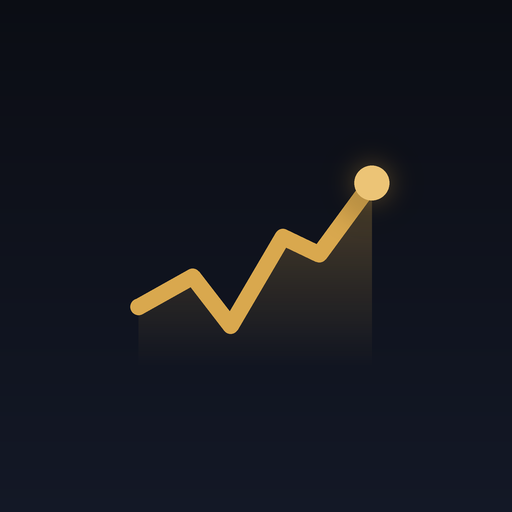

EQ Markets already has a look, and it is written down in DESIGN.md at the repo root: chart paper, white sheets edged with hairlines, deep ink, one clinical teal, amber and red only for readings outside their normal band, and one hue per indicator group. This guide does not change any of it. It gathers the brand side in one place (the mark, the name, the colours, the type and the files) so the app, the GitLab repo and its card on ethantam.dev read as the same product.
Every colour below is a token in src/styles/base.css at v2.1.0. Component rules stay in DESIGN.md; where this page and that file disagree, DESIGN.md and the code win.
EQ Markets has two marks today, and this guide records both rather than choosing. In the app, the rail opens with a line that rises, dips and rises again to a dot, drawn in paper on a deep-ink square. The icon files carry an older drawing from before the observation-chart redesign: a gold line on near-black.


A 24-unit grid. One path through 3,15.5 → 8,11 → 12,15 → 20,6.5, stroke 2.6 with round caps and joins, and a dot of radius 2.4 at the end. It sits at 15px inside a 26px square with 7px corners: deep-ink fill, paper line. Both colours are tokens (--ink, --paper), so in the dark theme the square turns light and the line dark. Below 560px the name hides and only the square remains.
A gold line (#D9A84E) through four bends to a glowing dot at the top right, with a soft gold fill beneath it, on a near-black ground that shades from #0C0E16 to #121724. It is the favicon, every home-screen icon, the maskable icon and the og:image. Neither colour is a token in the app today.
The rail sets the name in Public Sans Bold at 17px, tracking −2%, beside the 26px mark, on chart paper (left) or the night ward (right). The full name is Equarian Markets: page title, manifest name and og:title. The home screen says Equarian. The app and its docs say EQ Markets.
A near-neutral clinical palette with one teal, a two-step alert ladder (amber, red) and five muted group hues. Every colour has one job. Colour is spent on readings that are unusual, so a quiet chart means a normal market.
--paper#F4F5F1--sheet#FFFFFF--sheet-2#EEF1EC--rule#DCE1DA--rule-2#C3CBC2--ink#13212B--ink-2#3F4D57--ink-3#5B6771--teal#0B6E72--up#18704A--down#B3322F--amber-ink#85570A--band-a#F6E5B0--band-r#F0C6C0--zone-a#C98A12--zone-r#C23A33--g-rates#2D68A8--g-risk#7E4AA3--g-carry#24805F--g-cmdty#A2651A--g-tape#4A6378One hue per group, carried on the rail swatch, the row dot, the heading square and the detail chart. Never state.
--paper#0E1316--sheet#151C20--sheet-2#1C252A--rule#263137--ink#E7ECEA--ink-3#8F9C9C--teal#4CBDB5--up#52C68F--down#F2766FThe theme follows the system unless the user picks one. Neither theme is a filter of the other; every token is redefined.
icon-512.png#D9A84Eicon-512.png#0C0E16manifest#0A0B0FSampled from the PNGs and read from manifest.webmanifest. See Loose ends.
Teal is never a fill, a chart series or a status colour. Amber and red appear only as band tints and zone marks for out-of-range readings; a day's change stays ink unless the move is rare.
One civic grotesque, Public Sans, in four weights (400 to 700), loaded from Google Fonts with the system stack behind it. Tabular figures are switched on for the whole body so every column of numbers lines up. Scale and weight make the hierarchy, not colour.
Nothing functional is set below 12px; the 11px chart axis ticks are the one exception. The sign comes before any prefix: −$1.20, not $-1.20.
Three things the app already draws that carry the brand better than any illustration.
Bands rest in grey. Only the band holding the latest reading lights up, amber beyond the outer 10% and red beyond the outer 2.5%, and the end dot takes that zone's colour.
Last good value · source retrying
No data · retrying
A failed feed keeps its row. The value greys and the reading becomes a 5px stamp in amber or muted ink. Nothing is blanked or hidden.
Each group has exactly one hue, always on a small rounded square, wherever the group appears.
From PRODUCT.md's brand commitments and the copy already in the app.
Every file the brand lives in today. Nothing on this page is new artwork.
index.html (.brand-mark) | The in-app mark, inline SVG on a 24-unit grid |
public/icons/icon-512.png | App icon, 512×512 (gold on near-black): manifest any, and og:image |
public/icons/icon-192.png | Manifest any and every home-screen shortcut |
public/icons/icon-maskable-512.png | Manifest maskable |
public/icons/apple-touch-icon.png | iOS home screen |
public/icons/favicon-32.png | Browser tab |
public/screenshots/*.webp | Install-sheet screenshots (narrow 780×1688, wide 1280×800) |
docs/screenshots/ | README images |
DESIGN.md | The design system: layout, elevation, components, do's and don'ts |
src/styles/base.css | Every colour token, both themes |
Things this guide found and did not change.
manifest.webmanifest still sets theme_color and background_color to #0A0B0F, while index.html sets theme-color to chart paper or the night ward, so an installed app opens on a near-black splash even in the light theme.og:image is the 512×512 square icon, so link previews show the old gold mark, not a 1200×630 card.Copied from the repo as it is, so this page and the app can't drift.
:root {
--paper: #F4F5F1;
--sheet: #FFFFFF;
--sheet-2: #EEF1EC;
--rule: #DCE1DA;
--rule-2: #C3CBC2;
--ink: #13212B;
--ink-2: #3F4D57;
--ink-3: #5B6771;
--teal: #0B6E72;
--teal-soft: rgba(11, 110, 114, .1);
--up: #18704A;
--up-soft: #E2F0E7;
--down: #B3322F;
--down-soft: #F7E2DF;
--amber-ink: #85570A;
--band-a: #F6E5B0;
--band-r: #F0C6C0;
--zone-a: #C98A12;
--zone-r: #C23A33;
--series: var(--ink-2);
--g-rates: #2D68A8;
--g-risk: #7E4AA3;
--g-carry: #24805F;
--g-cmdty: #A2651A;
--g-tape: #4A6378;
--shadow: 0 1px 2px rgba(19, 33, 43, .05), 0 6px 18px -8px rgba(19, 33, 43, .12);
--scrim: rgba(19, 33, 43, .42);
color-scheme: light;
}.brand { display: flex; align-items: center; gap: 10px; padding: 4px 10px; font-weight: 700; font-size: var(--fs-lg); letter-spacing: -.02em; white-space: nowrap; color: var(--ink) }
.brand-mark { width: 26px; height: 26px; border-radius: 7px; flex: none; display: grid; place-items: center; background: var(--ink); color: var(--paper) }
.brand-mark svg { width: 15px; height: 15px; display: block }<meta name="theme-color" content="#F4F5F1" media="(prefers-color-scheme: light)">
<meta name="theme-color" content="#0E1316" media="(prefers-color-scheme: dark)">
<link rel="manifest" href="/manifest.webmanifest">
<link rel="icon" type="image/png" href="/icons/favicon-32.png">
<link rel="apple-touch-icon" href="/icons/apple-touch-icon.png">
<meta name="apple-mobile-web-app-title" content="Equarian">
<meta property="og:title" content="Equarian Markets">
<meta property="og:description" content="Rates, risk, carry, commodities and the tape on one screen, with a daily read and a growth × inflation regime map.">
<meta property="og:image" content="/icons/icon-512.png">
<link href="https://fonts.googleapis.com/css2?family=Public+Sans:ital,wght@0,400;0,500;0,600;0,700;1,400&display=swap" rel="stylesheet">